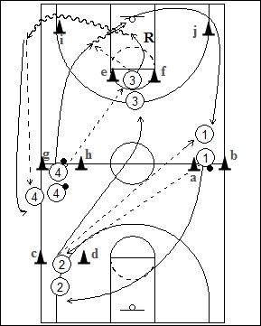

Catégorie : PASSES (Pas-016)Déroulement
- Les joueurs sont sur quatre files. Une file à une extrémité de la ligne médiane à hauteur des cônes a et b (Le premier joueur a un ballon); une file à hauteur d'une ligne des lancers-francs derrière les cônes c et d; une troisième file à la ligne des lancers-francs opposée; une quatrième file avec ballon à l'autre extrémité de la ligne médiane à hauteur des cônes g et h.
- Le premier joueur de la file 1 passe au premier de la file 2 qui transmet le ballon au deuxième joueur de la file 1. Dans le même temps, le premier joueur de la file 4 passe au premier de la file 3 qui lui remet le ballon pour un lay-up.
- Après sa passe, 1 va en 2; 2 va en 3; 3 effectue le rebond, passe au joueur suivant de la file 4 et va dans cette file. Après son lay-up, 4 va en 1.
Coaching Points
- C'est avant tout un exercice qui permet le travail de la longue passe (baseball?). Exiger donc la précision des passes.
- Demander beaucoup de rythme dans l'exécution de ce drill.